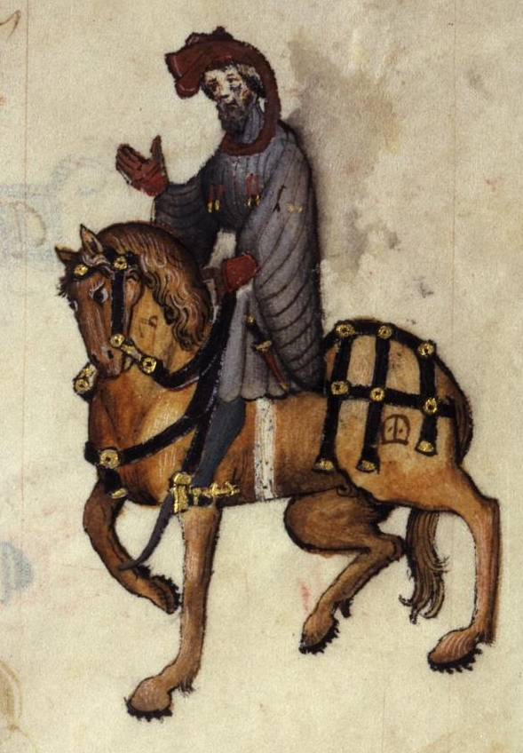
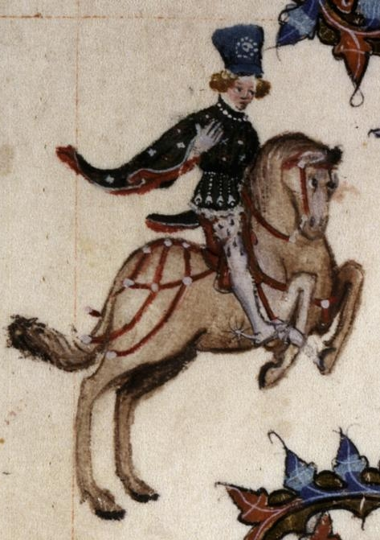

# Othello Complete Study Notes – Text, Context & Tragedy
Overview: The Power ofOthello
Shakespeare’s Achievement * Transformed a crude prose story into a play with intensity and immediacy. * Stage history shows audiences actively engaged in the unfolding tragedy, not passive.
⠀Revolutionary Elements * Astonishing choice: a black man as a tragic hero. * Challenges conventional thinking while reflecting Elizabethan concerns. * Domestic tragedy: tight focus, small cast, deep exploration of sexual jealousy. * Political dimension: Venice/Cyprus setting engages issues of national identity and external threats.
⠀
Textual Issues: What Did Shakespeare Write?
Fundamental Problem * No authoritative text exists; Shakespeare wrote scripts, not books. * Many plays unpublished during his lifetime; first collected edition (First Folio) in 1623. * No manuscripts survive.
⠀Othello’s Publication History * 1622: First printed in Quarto. * 1623: First Folio; one of seven plays with dramatis personae.
⠀Character Descriptions (Folio) * Othello: “the Moor” * Brabantio: father to Desdemona * Iago: a villain * Roderigo: gullible gentleman * Likely added by editors, not Shakespeare.
⠀Major Textual Differences * Folio has ~160 more lines; includes Desdemona’s willow song. * Emilia’s role more developed in Folio. * Over 1,000 differences between Quarto and Folio; over 50 oaths only in Quarto.
⠀Modern Editorial Reality * Editors combine Quarto and Folio into a “third” version. * Text instability explains variations in performance and interpretation. * Shakespeare worked in a collaborative, performative medium.
⠀Stage Directions & Structure * Action cues integrated into dialogue (Desdemona kneels; Cassio instructs “play here”). * Tableau moments emphasize dramatic impact (e.g., the bed in Act 5, Scene 2). * Act/scene divisions largely editorial; audience experience shaped by pacing of verse.
⠀
Sources & Adaptation
Primary Source * Giraldi Cinthio, Hecatommithi (1565) – only the heroine named; story unfolds over months.
⠀Shakespeare’s Adaptation * Condensed timeline, intense action. * Introduced Roderigo as Iago’s foil. * Added storm scene; removed source’s ending where Othello is executed by relatives. * Iago motivated by career jealousy rather than unrequited love.
⠀Character Development Changes * Desdemona: stronger, assertive, actively chooses Othello. * Emilia: gains moral authority, exposes Iago’s duplicity. * Bianca: combined two source characters into one fully developed figure. * Roderigo: emphasizes vulnerability through misguided love. * Overall shift from divine retribution to psychological complexity.
⠀Thematic Shift * Source emphasizes divine justice; Shakespeare presents a morally complex landscape exploring human agency and choice.
⠀
Tragedy: Theoretical Framework
Classical Definition (Aristotle) * Fall of a great person due to character flaw. * Evokes pity and fear; catharsis as emotional purging.
⠀Anouilh (from Antigone) * Tragedy as a wound spring: inevitable, precise, automatic. * Distinction from melodrama: tragedy is calm and morally complex; melodrama is sensational and chaotic.
⠀
Historical Context: Shakespeare’s England
Politics & Setting Venice * Thriving commercial center; culturally sophisticated yet morally dangerous. * Machiavellian associations; poisonings, political intrigue.
⠀Cyprus * Frontier between Venetian civility and Ottoman power. * Metaphor for Othello’s liminal social position and vulnerability to manipulation.
⠀Virginia Mason Vaughan: Othello’s loss threatens Venice itself; Cyprus mirrors Othello’s colonized-but-not-assimilated status. Race and Colour Medieval/Elizabethan Views * Blackness associated with sin, death, defilement; travel narratives emphasized “savagery and depravity.”
⠀Historical Reality * Black people present in England; seen mostly as servants or slaves, not authority figures.
⠀Previous Black Characters * Aaron (Titus Andronicus): complex villain, both vicious and tender; Shakespeare explores tragic potential of a Moor. * Prince of Morocco (Merchant of Venice): heroic, eloquent, accepts failure with dignity; commands audience respect despite stereotypes.
⠀Critical Debate * Anthony Barthelemy: Othello partly a stereotype; cannot subvert civic/natural order. * Karen Newman: Shakespeare challenges ideologies of race and gender by making Othello heroic and Desdemona’s love sympathetic.
⠀
Marriage
Conventional Expectations * Pamphlets and sermons promoted silent, obedient women. * Book of Common Prayer (1552) emphasized obedience to husband.
⠀Shakespeare’s Approach * Promotes partnership, mutual respect, and daughter’s right to choose.
⠀Key Scenes * Brabantio initially respects Desdemona’s agency but resists after elopement. * Desdemona asserts divided duty between father and husband. * Emilia evolves from obedience to moral action, refuses to stay silent against Iago’s deception.
⠀Relevant Texts * Sonnet 116: love as constant, enduring, mutual commitment. * Examples from Othello: multiple references to obedience nuanced by personal conscience.
⠀
Sexual Jealousy
Shakespeare’s Pattern * Husbands wrongly accuse wives (Claudio, Othello, Leontes, Posthumus). * Public exposure of alleged infidelity often tied to male honor.
⠀Critique of Patriarchy * Beatrice (Much Ado About Nothing) exposes male tyranny; Shakespeare empowers women to challenge assumptions. * Adriana (Comedy of Errors) argues for mutual fidelity. * Emilia highlights double standards and illogicality in male expectations; advocates justice and awareness.
⠀Key Lines * Emilia: argues husbands must recognize wives’ desires and sensibilities; women not inferior in capacity for love or betrayal.
⠀Conclusion * • Shakespeare interrogates social, legal, and moral norms through character presentation and actions rather than mere commentary.
Othello: Review
Introduction

From the stuff of somewhat crude and melodramatic prose fiction, Shakespeare created a play that has the intensity and excitement of happening for the first time whenever it is performed. As events unfold, an audience is drawn into the world of the play and is held by the moment-by-moment intensity of the experience. The stage history of Othello is punctuated by accounts of members of an audience intervening in the forlorn hope of halting the plunge to catastrophe. The dramatic experience denies any passive complacency in response to the events. This section seeks to explore how such a remarkable play was crafted. Shakespeare not only reflects the concerns and attitudes of his time but also vigorously challenges conventional thinking. His decision to make a black man a tragic hero was astonishing and this choice as well as the play's exploration of relationships can be illuminated by reference to his other work.
The tight focus of Othello, its relatively small cast and its searing exploration of sexual jealousy have earned it the label of 'domestic tragedy'. However, this is not to belittle the play, nor to imply that it lacks a political dimension. Setting the play in Venice, within the context of the threat of a Turkish invasion of Cyprus, ensures that considerations of national identity are embraced. Shakespeare provides a broader canvas for the play's intense focus upon the plight of the individual struggling to hold onto a sense of self under siege.
What did Shakespeare write?

It is sobering to realise that there does not exist a single, authoritative text of any of Shakespeare's plays. He wrote scripts, not books, and more than half his plays were not printed during his lifetime. The first collected edition of his plays was published in 1623, seven years after his death, and for plays like Antony and Cleopatra, Macbeth, As You Like It, Twelfth Night and The Tempest this is as near to what Shakespeare actually wrote as anyone can get. No manuscripts of his plays have survived and, where there are rival early editions, establishing a text is a matter which has absorbed scholars for centuries.
Some of Shakespeare's plays were published during his lifetime in quarto format (comparable to modern paperbacks) and these texts differ from the versions printed in the later Folio. Othello was first printed in 1622 in quarto format. In the Folio which appeared the following year, it is the ninth play in the Tragedies' section. It is one of only seven plays which include a list of dramatis personae at the end of the text. It would seem that each of these lists is designed to fill up what would otherwise be blank paper. The list for Othello includes some descriptive additions: 'the Moor' and 'father to Desdemona'. There are also phrases which define the characters. Iago is described as 'a villain' and Roderigo as 'a gulled gentleman', but it would seem that this text derives from the printing house and it cannot be taken as having authorial authority. The version of the play which appears in the First Folio is significantly different from the text that was published the year before. It contains about 160 more lines than the Quarto. Desdemona's willow song only appears in the Folio text and Emilia's role in the later stages of the play is developed. There are over a thousand differences between the two texts. For example, over 50 oaths appear only in the Quarto text. Scholars believe that the two texts are based upon different versions of the play and that the existence of both texts provides an opportunity to reflect upon Shakespeare's creative process of rewriting and revision.
Modern editors draw on both texts but the result is that they each produce as it were a 'third' version of the text. This Guide follows the New Cambridge edition of the play (also used in Cambridge School Shakespeare). Its editor, Norman Sanders, acknowledges that the text which he has produced conflates Q and F but, interestingly and importantly, he argues that the text then in some ways becomes, like a performance of the play, an interpretation in itself. It is vitally important in studying the play to recognise what might be referred to as the instability of the text. It helps to explain why actors and critics offer different interpretations. There can be no definitive text of Othello. The existence of variants is evidence that Shakespeare was working within a collaborative medium. The reality of live performance, and the pressures upon such a creative process, almost invariably result in a more fluid and less stable text. Editors must intervene in preparing a text and inevitably such a process shapes the reader's response to the text.
The division of Shakespeare's plays into acts and scenes is essentially editorial rather than authorial, and the scheme dates back essentially to 1623, when Heminge and Condell produced the First Folio edition of Shakespeare's plays. The convention for scene division that they chose to adopt was that a new scene is marked once the action has been punctuated by the stage having been cleared of actors. Though the first editors occasionally nodded (the Queen is left on stage between Acts 3 and 4 of Hamlet), the convention is generally observed and it just happens to be a different convention from, say, French Classical Theatre, where the entrance of a new character requires a new scene. The convention has nothing to do with changing the scenery and comparatively little to do with an audience's experience in the theatre. The action may be disjointed or it may be flexible and fluid. The audience's experience in the theatre is determined much more by the pace of the verse and the requirements of exits and entrances.
There is also the matter of stage directions. Shakespeare's preferred method is to integrate indications for action in the dialogue: when Desdemona is demonstrating to Iago her commitment to Othello she states, 'Here I kneel' (Act 4 Scene 2, line 150); the cue for the Musicians is given by Cassio, 'Masters, play here' (Act 3 Scene 1, line 1); and Othello's deference to the authority of Venice is indicated when he takes the letter from Lodovico, 'I kiss the instrument of their pleasures' (Act 4 Scene 1, line 207). In this way, Shakespeare constructs the stage picture and creates moments of tableau like the 'tragic loading of this bed' (Act 5 Scene 2, line 359). The process of reading any play must engage with the indications for staging, and modem editors seek to assist readers by adding directions to their texts. In most cases, matters such as the insertion of entrances and exits merely involve an uncontroversial tidying up of the text, but there are occasions when an editor's indication of what happens on stage becomes interpretative (see page 30).
What did Shakespeare read?
The business of disentangling strands of influence and understanding the process of adaptation can be complex and confusing where there are several possible sources for a particular play. However, in the case of Othello it seems that Shakespeare worked from just one source: The story of Disdemona of Venice and the Moorish Captain, by Giraldi Cinthio, published in his collection, Hecatommithi (1565). Shakespeare modifies, expands and invents material to shape what is essentially a narrative into dramatic form. The only character whom Cinthio names is the heroine and what follows is a summary of his story:
Cinthio tells his story in far more leisurely fashion than does Shakespeare. The action spreads over months and extends beyond Disdemona's death. Roderigo is Shakespeare's invention. He provides a foil for Iago and might initially tempt an audience to sympathise with what seems a legitimate grievance. However, he is soon material for Iago's skilful exploitation and abuse. By his love for Desdemona, Roderigo provides evidence of 'the wealthy, curled darlings of our nation' whom she has rejected. Like many of the characters in the play, he is rendered vulnerable by his love. In Cinthio's story, there is no storm and the Moor and Disdemona travel and arrive safely together. The Captain (Cassio) has had no part in the development of the relationship between the Moor and Disdemona and the loss of his job has nothing to do with the Ensign. There is no suggestion that the Iago figure is motivated by being passed over for promotion. His love for Desdemona turns to hatred and he develops an intense jealousy of the Captain. Her death is contrived to appear accidental and the actual details seem absurd. Shakespeare takes the decision to invest Othello with the qualities of an 'honourable murderer'. The Venetians deport and try the Moor. Despite torture he does not recount what happened and so escapes death. After imprisonment, followed by banishment, he is killed by Disdemona's relatives and Cinthio adds 'as he deserved to be'. Sometime later, the Ensign is tortured about another matter and, although he reveals nothing, he dies 'miserably' as a result of his injuries. In Shakespeare's play, Othello is open and honest about his actions and the reasons for them. He takes his own life in an act of judicial execution and all references to torture are applied exclusively to I ago. He declares 'I never will speak word' to which Gratiano replies:
Torments will ope your lips. (Act 5 Scene 2, line 303)
and the threat is confirmed in the closing moments of the play as Lodovico urges Cassio '. . . the torture, O, enforce it!'
In Cinthio's story, the women are more shadowy figures than in Shakespeare's play. However, certain details from the source seem to have shaped both theatrical practice and critical response to the play, sometimes blurring the effect of the changes Shakespeare has made in characterisation. There are examples of editors assuming that Shakespeare has followed Cinthio more closely than is in fact the case. Shakespeare's decision to have Desdemona marry Othello against determined parental opposition makes her stronger than her counterpart. In the senate scene, she speaks fluently and assuredly of the totality of her commitment to her husband. Emilia is employed not by her but by Othello, for he instructs Iago, 'I prithee, let thy wife attend on her'. When we first see the women together on their arrival in Cyprus, there is little sense of any relationship between them beyond that of mistress and maid. In the original, the Ensign's wife and Disdemona were great friends. The Ensign's wife is a confidante and she knows about her own husband's duplicity, but dare not speak for fear of him. There is no such relationship between the women in Shakespeare's play. He establishes clearly the way in which each woman's marital bond takes priority over any female friendship.
Bianca fulfils the role of two quite different women in Shakespeare's source. One of the women at the Captain's (Cassio's) lodging is skilled in embroidery and he asks her to copy the handkerchief. She is distinct from the prostitute whose house he leaves before being set upon by the Ensign. Shakespeare invests much more in the character of Bianca than is required by these two narrative strands. Although she is described in the Folio list of characters as 'a courtesan', this designation is unlikely to be authorial and the play merely gives us allegations rather than evidence of her promiscuity. Cinthio's account ends by asserting that events showed how God revenged 'the innocence of Disdemona' but the role of the Ensign's wife is important in unravelling details. It was she 'who had all along known the truth'. From this hint perhaps, Shakespeare developed Emilia's remarkable authority in the final scene.
Tragedy
In a modem play by Willy Russell, Educating Rita, Frank explains to a sceptical Rita why a report in the paper, 'Man Killed by Falling Tree', is not a tragedy. It may be tragic but tragedy 'is inevitable'. His definition is broadly based upon Aristotle. The classical notion of tragedy is that it charts the fall of a great man from a position of high esteem and power to his death. Of crucial importance is the notion that the protagonist has a fault, or flaw, in his character which brings about his downfall. The experience of tragedy excites in the members of the audience intense emotions of pity and fear as they share in the experience of the central characters and undergo a purgation, or catharsis. Participating in the process prompts feelings of exhaustion, cleansing and enrichment.
However it can be unhelpful to assume that Shakespeare shaped his plays within this mould. Perhaps there is no such thing as 'Shakespearean tragedy' but, more straightforwardly, tragedies by Shakespeare. Certainly, Shakespeare does not observe strict rules of genre, though aspects of Aristotle's pattern can be seen to apply to Othello. In one of his own plays (Antigone) the French playwright, Jean Anouilh, offered a description of tragedy which has particular force for Othello: The spring is wound up tight. It will uncoil of itself. That's what's so convenient about tragedy.
It only needs the slightest turn of the wrist to set it going. Or a glance at a girl lifting her arms in the street, or when you wake on a fine morning a yearning to be respected, or perhaps in an evening one question too many. Anything. And then it's enough, there's nothing else to be done. The rest is automatic. It's precise, accurate, oiled since the beginning of time. Death, treason, sorrow are there ready, along with the outbursts, thunderings and silences. Above all, the silences. The silence when the executioner's axe is raised in the final scene; the silence in the opening moments when the two lovers stand, naked, face to face for the first time in the darkened room, not daring to move. The silence when the acclaim of the crowd resounds around the victor — and you think of a film without any sound, with the mouths gaping and silent, all the noise is no more than a picture, and the victor, already defeated, is alone in the midst of his silence.
Tragedy is clean; restful and certain. It's got nothing to do with melodrama, with wicked villains, persecuted innocents, avengers and last-minute repentance. In melodrama, death is accidental and horrifying. You might perhaps be saved, saved perhaps by the fine young man who's gone for the police. In tragedy, all is calm. In the first place, we're among ourselves - he who kills is as innocent as he who gets killed - it all depends on what part you are playing.
And then, above all, tragedy is restful. You know there's no hope, no vain, illusory hope. You're trapped. The sky has fallen on you and there's nothing to do but shout - not groan, no, not complain - shout out in a loud voice all those things that you never thought you'd be able to say, never knew you had it in you to say. But not because it will do you any good, you say them for their own sake, you say them because you learn a lot.
In melodrama, you argue because you hope to escape. That's vulgar; it's practical. In tragedy, argument is a luxury enjoyed by kings. There's no longer any escape.
Anouilh's metaphor of the spring captures the unremitting nature of the action of Othello. There is an inexorable mechanism at work: events have to run their course. His distinction between melodrama and tragedy is valuable. In the latter, an audience is implicated in the action for 'we're among ourselves'. We are encouraged to go beyond simple black-and-white oppositions. Indeed, immediate identification of hero and villain may not be easy. Much more can be mined from Anouilh's description of tragedy. His statement that 'all is calm' might well be the basis of analysing how Act 5 of Shakespeare's play works.
What was Shakespeare's England like?
Politics
Defining Othello as a 'domestic' tragedy has carried with it a value judgement. The hero is not a king, like Macbeth or Lear, and therefore his tragedy is frequently thought to have no significant political consequences or implications beyond the scope of personal relationships. However, the location of the action is important. At the time Shakespeare was writing, plays with an Italian setting were popular. Venice, a thriving commercial centre, had two different characteristics. It was seen as a place of romance, with cultural values and yet also, as the birthplace of Niccolo Machiavelli (1469-1527), it was associated with poisonings and vice. The action of the play soon shifts to an island under threat of invasion.
The Turks had attacked Cyprus in 1570 and had conquered it in the following year. Cyprus was a Venetian protectorate and the conflict between Venice and Turkey was between Christians and infidels: the historical background provides a context for the narrative. Virginia Mason Vaughan argues that 'Othello's loss . . . does have frightening consequences for Venice, a city precariously balanced on the frontiers of Christian civilisation'. The opening chapter of her book 'Othello': A Contextual History sets out an important case for acknowledging the particular implications of the play's setting.
In contrast to Othello, Venice seems sure of its identity as the play begins - urbane and civilised; as Brabantio exclaims, 'This is Venice; / My house is not a grange' (1.1.106-7). Centuries of legal and governmental tradition have defined Venice as the locus of rational judgment. . . Caught in a liminal zone between Venice's Christian civility and the Ottomite's pagan barbarism is Cyprus, a Venetian colony under siege. Cyprus is the frontier, the uttermost edge of western civilisation, simultaneously vulnerable to attack from without and subversion from within . . . Cyprus's geographical and political position mirror Othello's psychic situation. Like Cyprus, Othello can be colonised by Venice - he can be put to use. But he can never become wholly Venetian. This liminal positioning makes him vulnerable to Iago's wiles and, like Cyprus, if he is not fortified, he will 'turn Turk'.
She claims that the opposition of Venetian and Turk continues through the play, culminating in Othello's final speech in which he ultimately conquers the threat presented by 'a turbaned Turk'. In her reading, 'the precariousness of a nation's identity - not just an individual's - lurks behind the tragedy of Othello and his wife'.
Race and colour
In medieval England, and throughout European folk-lore, the colour black was associated with the demonic. By extension, it came to embrace not only ideas of sin and death but the negative connotations of defilement and all the opposite characterisation of 'white'. Elizabethans were fascinated by travellers' tales and the accounts offered there of the appearance, behaviour, manners, customs (including cannibalism) and social interaction of groups of people unlike themselves. Such narratives often suggested that natives went about naked and this became associated with savagery, depravity and a predatory sexuality.
There is evidence that there were a considerable number of black people in England in the late sixteenth century. Elizabeth I gave licence for a sea captain to transport all 'Negroes and Blackamoors' from England in 1601. It would seem that they had arrived in England as a result of the conflicts with Spain and were slaves or servants. When Shakespeare was writing Othello, therefore, his audience's awareness of blackamoors would be as men who were slaves or servants, not people with status or authority in society.
Drama of the period makes a good deal of use of black characters. Playwrights were drawn to the potential offered by the attraction of the 'other', the visual contrast the character provides and the scope to explore unusual aspects of character and behaviour. Generally, the black roles before Othello confirmed the assumptions that such characters were morally deficient, sexually active and attracted to white women. Before writing Othello, Shakespeare had included black characters in two earlier plays, Aaron in Titus Andronicus and the Prince of Morocco in The Merchant of Venice.
Although Titus Andronicus is one of Shakespeare's earliest plays, there is an increasing respect for its qualities. Aaron is an evil character. He has an adulterous relationship with Tamora, the defeated Queen of the Goths who becomes Empress of Rome. Aaron identifies himself as sexually voracious, relishing the opportunity to wanton with this queen'. He also sees himself as a figure of revenge:
Vengeance is in my heart, death in my hand. Blood and revenge are hammering in my head. (Act 2 Scene 3, lines 38-9)
But Shakespeare complicates an audience's evaluation by giving Aaron a parental role. Tamora gives birth to a son, whose black skin reveals that the father is Aaron and not her husband. She sends the baby to Aaron for him to destroy, but he will not do so. Cradling his son, he offers commentary upon the shared bond of their colour:
Coal-black is better than another hue In that it scorns to bear another hue. (Act 4 Scene 2, lines 99-100)
He is fiercely protective of the child and is determined to care for him:
Come on, you thick-lipped slave. I'll bear you hence. For it is you that puts us to our shifts. I'll make you feed on berries and on roots. And fat on curds and whey, and suck the goat. And cabin in a cave, and bring you up To be a warrior and command a camp. (Act 4 Scene 2, lines 176-81)
When he is arrested, he promises a full confession of his crimes if his son is saved. His uncompromising commitment to evil is tempered by an extraordinary tenderness and love, regardless of the fact that the child's cries reveal his whereabouts to those pursuing him. Aaron is judged by the Romans to be 'an inhuman dog' but the role suggests Shakespeare's early awareness of the theatrical, even tragic, potential of a Moor.
In The Merchant of Venice, the Prince of Morocco is the first of Portia's suitors to elect to take the casket test to try to win her hand in marriage. Like Aaron, he conforms to the stereotype of the black man attracted to a white woman but, once again, Shakespeare complicates an audience's judgement. Although in performance he is too often presented as an exaggerated figure who prompts laughter, there is a dignity in his consciousness of'otherness'. In his first line he appeals against what he recognises will be an immediate judgement based upon his colour:
Mislike me not for my complexion. The shadowed livery of the burnished sun. To whom I am a neighbour and near bred. (Act 2 Scene 1, lines 1-3)
His boastfulness about his achievements may serve perhaps, like Othello's, to mask an uncertainty, even a vulnerability:
By this scimitar. That slew the Sophy and a Persian prince That won three fields of Sultan Solyman, I would o'er-stare the sternest eyes that look. Outbrave the heart most daring on the earth. Pluck the young sucking cubs from the she-bear. Yea, mock the lion when a roars for prey. To win thee, lady. (Act 2 Scene 1, lines 24-31)
Shakespeare gives him more time in the play than his somewhat contemptible successor, the Prince of Aragon. Morocco leaves the stage hoping for 'good fortune', which he acknowledges will determine his fate to be 'blest - or cursed'st among men!'. It is not until six scenes later that he makes choice of the caskets. Portia describes him as 'this noble prince' and although he will fail the casket test, his 48-line speech of reflection commands an audience's attention and respect. His reasons for choosing the gold casket cannot be despised and he accepts his fate with dignity. It is to his credit that he makes no demands upon Portia once his fate is decided. He leaves immediately because his emotional investment in the enterprise has been sincere: 'I have too grieved a heart / To take a tedious leave'.
The characters of Aaron and Morocco show that, even fairly early in his career, Shakespeare was not only aware of the dramatic possibilities of black characters but also conscious of ways in which the established stereotype might be challenged. Nevertheless, his decision to craft a tragedy with a black man as the protagonist was a remarkable decision. Shakespeare wrote his plays in an England which was committed to its own sense of itself, its culture and its values. Social cohesion can be reinforced by projecting fears and frustrations upon an 'out-group' and it is all too easy to vilify a tiny minority. The conventional, unthinking attitudes of Jacobean times might from a modern perspective be labelled 'racist', but there is a continuing debate about where Shakespeare stood. Some critics feel that the character of Othello confirms the cultural prejudices of the time, while others argue that the play as a whole challenges such easy assumptions. There is agreement that the text contains the stereotype of the black man, but critics disagree in their judgements of how Shakespeare uses such a stereotype.
Two critics writing in 1987 illustrate the different points of view. Anthony Barthelemy claims:
However successful Shakespeare's manipulation of the stereotype may be, Othello remains identifiable as a version of that type ... Shakespeare's black Moor never possesses the power or desire to subvert civic and natural order.
On the other hand, Karen Newman's view is:
Shakespeare was certainly subject to the racist, sexist, and colonist discourses of his time, but by making the black Othello a hero, and by making Desdemona's love for Othello, and her transgression of her society's norms for women in choosing him, sympathetic, Shakespeare's play stands in a contestatory relationship to the hegemonic ideologies of race and gender in early modern England.
Marriage
Generalisation is always dangerous. It is often asserted that the concept of marriage during the Elizabethan/Jacobean period was very different from nowadays, but attitudes were shifting and conventional assumptions were being questioned. Although pamphlets and sermons from the pulpit promoted the appropriateness of silent, obedient and malleable women, in the theatre patriarchal attitudes were under scrutiny.
Shakespeare gives us many forceful, fluent female characters. Encouragement to make judgements of their social behaviour is provided within the plays themselves. At the end of The Taming of the Shrew, Katherine is invited by her husband to tell the 'headstrong women', Bianca and the Widow, 'What duty they do owe their lords and husbands'. Katherine's response reminds women that 'they are bound to serve, love and obey', echoing the words of the wedding ceremony from The Book of Common Prayer (1552), 'Wylte thou obey him, and serue him, love, honor, and kepe him, in sickenes and in health?' But Katherine makes it clear that she regards the duty a woman 'owes to her husband' as one that must be qualified. She must be obedient to his 'honest will'. She has come to recognise from the experience she has gained throughout her own journey during the course of the play that what matters most is an understanding that goes beyond words and sympathy. Shakespeare's priority in reflecting upon the aspirations of so many couples in his plays is to promote the merit of partnership and mutual respect. He offers a compelling definition of love in Sonnet 116:
Let me not to the marriage of true minds Admit impediments; love is not love Which alters when it alteration finds, Or bends with the remover to remove. O no, it is an ever-fixed mark That looks on tempests and is never shaken; It is the star to every wand'ring bark. Whose worth's unknown, although his height be taken. Love's not Time's fool, though rosy lips and cheeks Within his bending sickle's compass come; Love alters not with his brief hours and weeks, But bears it out even to the edge of doom. If this be error and upon me proved, I never writ, nor no man ever loved.
In Othello, obedience is a central concern. There are n references to 'obey' and 'obedience' in the text. Through the figure of Desdemona, Shakespeare also explores (and endorses, as he does in A Midsummer Night's Dream, Romeo and Juliet and Cymbeline) a daughter's right to choose her own husband. Brabantio has respected Desdemona s decision to reject Roderigo's proposal of marriage ('my daughter is not for thee') but after her elopement with Othello, Brabantio seeks to exert a patriarchal control:
Come hither, gentle mistress; Do you perceive in all this noble company Where most you owe obedience? (Act 1 Scene 3, lines 176-8)
In Desdemona's reply, Shakespeare presents a courteous, yet confident assertion of the need for fathers to acknowledge and respect a daughter's maturity. A father's authority is inevitably, and appropriately, replaced by that of a husband:
My noble father, I do perceive here a divided duty: To you I am bound for life and education; My life and education both do learn me How to respect you. You are lord of all my duty; I am hitherto your daughter. But here's my husband; And so much duty as my mother showed To you, preferring you before her father. So much I challenge that I may profess Due to the Moor my lord. (Act 1 Scene 3, lines 178-87)
Both Desdemona and Emilia give the highest priority to obeying their husbands. Desdemona tells Othello, 'Whate'er you be, I am obedient', and Emilia obeys Iago's instruction not to reveal the whereabouts of the handkerchief. In order to obey her husband, Emilia lies to Desdemona, 'I know not, madam.' However, when Iago's deception is revealed, Emilia is quick to acknowledge her own complicity because of the union of husband and wife. She states clearly that the moral imperative over-rules the marital bond ("Tis proper I obey him, but not now') and she refuses to obey her husband's commands to be silent and to go home. She is, she knows, 'bound' to speak out and she is prepared to declare an independence,'Perchance, Iago, I will ne'er go home.'
Sexual jealousy
Shakespeare is acutely aware of the dramatic potential of the theme of sexual jealousy. In Much Ado About Nothing, Claudio's erroneous suspicions that Hero has been unfaithful to him lead him to reject her at their wedding. The men are united in asserting not only that they are right in their judgement about Hero but also that public exposure of Hero's infidelity is an appropriate action to maintain their male honour. Beatrice exposes such patriarchal tyranny and Shakespeare gives her a powerful voice to challenge conventional attitudes.
Shakespeare writes about sexual jealousy throughout his career, and the character of Claudio is followed not only by Othello but also by Leontes (in The Winter's Tale) and Posthumus (in Cymheline). All four husbands wrongly accuse their wives of infidelity. In each play there is a strong, eloquent woman to voice powerful opposition to male complacency. Bound up with the issue of sexual jealousy is the belief that a double standard operates in sexual matters, but Shakespeare is aware how such a notion can be questioned. In one of his very first plays, The Comedy of Errors, Adriana uses marital union as an effective argument against licensed male promiscuity. She warns that a husband's infidelity contaminates a wife:
For if we two be one, and thou play false, I do digest the poison of thy flesh. Being strumpeted by thy contagion. Keep then fair league and truce with thy true bed, I live unstained, thou undishonoured. (Act 2 Scene 2, lines 133-7)
Her words make a powerful case for mutual fidelity as a means of preserving purity and the honour of both husband and wife.
In Othello, Emilia takes the issue further. Her analysis of attitudes towards sexual behaviour exposes the illogicality and unfairness of judgements about sexual behaviour which operate differently for men and women:
Let husbands know Their wives have sense like them: they see, and smell. And have their palates both for sweet and sour As husbands have. What is it that they do When they change us for others? Is it sport? I think it is. And doth affection breed it? I think it doth. Is't frailty that thus errs? It is so too. And have not we affections. Desires for sport, and frailty, as men have? (Act 4 Scene 3, lines 89-97)
Ultimately, Emilia's appeal is for kindness and respect in marriage: 'Then let them use us well'. If they do not and their wives stray then the women are simply following the example set by their husbands: 'their ills instruct us so'.
An awareness that legal and moral codes operated differently at the time Shakespeare was writing is important in revealing the extent to which Shakespeare's plays question the prevailing attitudes. Consideration of what the play has to say about matters of social organisation or relationships between men and women can be explored most effectively, however, through analysis of the ways in which characters are presented and how their words and actions are judged within the text itself.